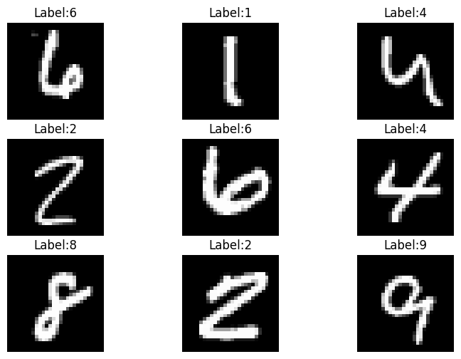
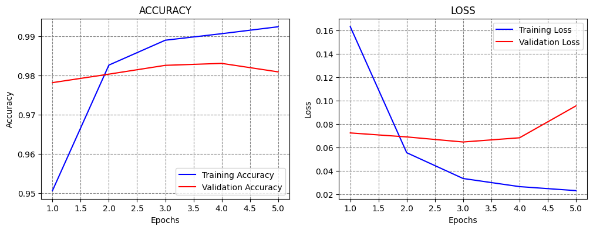
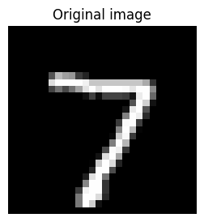
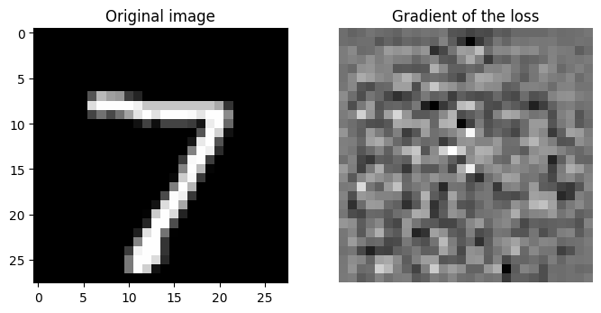
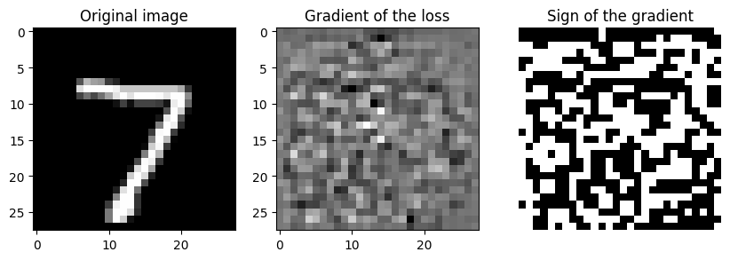
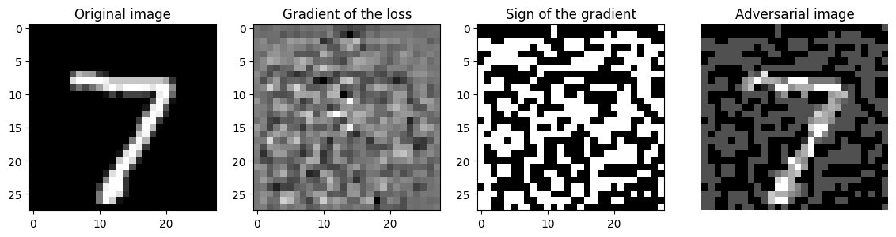

import numpy as np
import matplotlib.pyplot as plt
import tensorflow as tf
from tensorflow import keras
from tensorflow.keras.models import Model
from tensorflow.keras.layers import Input, Dense, Flatten, Conv2D, MaxPooling2DImplementation of FGSM Attack
Import Modules
Load the MNIST Dataset
# Load the dataset from keras datasets
(train_images, train_labels), (test_images, test_labels) = keras.datasets.mnist.load_data()# Display the shape of training and test data
print(train_images.shape)
print(test_images.shape)
# Each image has 28x28 pixels(60000, 28, 28)
(10000, 28, 28)# Display 9 images from the training set adn their labels
plt.figure(figsize=(9, 6))
for n in range(9):
i = np.random.randint(0, len(train_images), 1)
ax = plt.subplot(3, 3, n+1)
plt.imshow(train_images[i[0]], cmap='gray')
plt.title('Label:' + str(train_labels[i[0]]))
plt.axis('off')
Data Preprocessing
# Normalize pixel values to range [0, 1]
train_images = train_images.astype('float32') / 255.0
test_images = test_images.astype('float32') / 255.0# Reshape the images to have three channels
train_images = train_images.reshape(-1, 28, 28, 1)
test_images = test_images.reshape(-1, 28, 28, 1)# Display the shapes of train and test datasets
print('Training data inputs', train_images.shape)
print('Training labels', train_labels.shape)
print('Testing data inputs', test_images.shape)
print('Testing labels', test_labels.shape)Training data inputs (60000, 28, 28, 1)
Training labels (60000,)
Testing data inputs (10000, 28, 28, 1)
Testing labels (10000,)Build and Train the Model
# Define the layers in the model
inputs = Input(shape=(28, 28, 1))
conv1a = Conv2D(filters=32, kernel_size=3, padding='same')(inputs)
conv1b = Conv2D(filters=32, kernel_size=3, padding='same')(conv1a)
pool1 = MaxPooling2D()(conv1b)
flat = Flatten()(pool1)
dense1 = Dense(128, activation='relu')(flat)
outputs = Dense(10, activation='softmax')(dense1)# Define the model by providing the inputs and outputs
model = Model(inputs, outputs)# Compile the model
model.compile(optimizer='adam', loss='sparse_categorical_crossentropy', metrics=['accuracy'])# Fit the model to the training dataset
history = model.fit(train_images, train_labels, epochs=5, validation_split=0.2, verbose=1)Epoch 1/5 1500/1500 ━━━━━━━━━━━━━━━━━━━━ 9s 4ms/step - accuracy: 0.9053 - loss: 0.3123 - val_accuracy: 0.9782 - val_loss: 0.0723 Epoch 2/5 1500/1500 ━━━━━━━━━━━━━━━━━━━━ 6s 4ms/step - accuracy: 0.9843 - loss: 0.0520 - val_accuracy: 0.9803 - val_loss: 0.0689 Epoch 3/5 1500/1500 ━━━━━━━━━━━━━━━━━━━━ 6s 4ms/step - accuracy: 0.9906 - loss: 0.0284 - val_accuracy: 0.9826 - val_loss: 0.0645 Epoch 4/5 1500/1500 ━━━━━━━━━━━━━━━━━━━━ 6s 4ms/step - accuracy: 0.9918 - loss: 0.0232 - val_accuracy: 0.9831 - val_loss: 0.0681 Epoch 5/5 1500/1500 ━━━━━━━━━━━━━━━━━━━━ 6s 4ms/step - accuracy: 0.9938 - loss: 0.0195 - val_accuracy: 0.9809 - val_loss: 0.0953
# Plot the accuracy and loss
train_loss = history.history['loss']
val_loss = history.history['val_loss']
acc = history.history['accuracy']
val_acc = history.history['val_accuracy']
epochsn = np.arange(1, len(train_loss)+1,1)
plt.figure(figsize=(12, 4))
plt.subplot(1,2,1)
plt.plot(epochsn, acc, 'b', label='Training Accuracy')
plt.plot(epochsn, val_acc, 'r', label='Validation Accuracy')
plt.grid(color='gray', linestyle='--')
plt.legend()
plt.title('ACCURACY')
plt.xlabel('Epochs')
plt.ylabel('Accuracy')
plt.subplot(1,2,2)
plt.plot(epochsn,train_loss, 'b', label='Training Loss')
plt.plot(epochsn,val_loss, 'r', label='Validation Loss')
plt.grid(color='gray', linestyle='--')
plt.legend()
plt.title('LOSS')
plt.xlabel('Epochs')
plt.ylabel('Loss')
plt.show()
Evaluate the Model
# Calculate and print the accuracy on the test dataset
evals_test = model.evaluate(test_images, test_labels)
print(f"Accuracy on test dataset: {evals_test[1]*100:5.2f}%")313/313 ━━━━━━━━━━━━━━━━━━━━ 2s 4ms/step - accuracy: 0.9739 - loss: 0.1028 Accuracy on test dataset: 97.89%
FGSM Adversarial Attack
# Take the first test image and create a batch of it
first_image = test_images[0].reshape(1, 28, 28, 1)
print(first_image.shape)(1, 28, 28, 1)# Convert the image to tf tensor
first_image_tf = tf.convert_to_tensor(first_image)# Take the corresponding label
first_label = test_labels[0]
print(first_label)7# Plot the image
figure = plt.figure(figsize=(3, 4))
plt.imshow(first_image.squeeze(), cmap="gray")
plt.title('Original image')
plt.axis("off")
plt.show()
FGSM attack: \(x_{\text{adv}} = x + \epsilon \cdot \text{sign}(\nabla_{x} \mathcal{L}(C(x, w), y))\)
# Use for calculating the gradients of the loss with respect to the inputs
# tensorflow uses the context manager tf.GradientTape() for calculating the gradient
with tf.GradientTape() as tape:
# watch defines that the gradients will be calculated for the first image
tape.watch(first_image_tf)
# Forward pass: calculate the probabilities for the first image
preds = model(first_image_tf)
print('Probabilities:', preds)
# Calculate the loss for the first image
loss = tf.keras.losses.sparse_categorical_crossentropy(tf.reshape(first_label,(1,)), preds)
print('\nLoss:', loss)Probabilities: tf.Tensor(
[[3.0427100e-12 9.5829449e-11 5.5821576e-12 2.3944402e-08 1.3330419e-16
6.3486593e-15 6.5996301e-20 9.9999988e-01 3.8570391e-10 1.3332502e-07]], shape=(1, 10), dtype=float32)
Loss: tf.Tensor([1.1920928e-07], shape=(1,), dtype=float32)# Calculate the gradient of the loss w.r.t to the first image
gradient = tape.gradient(loss, first_image_tf)
gradient.shapeTensorShape([1, 28, 28, 1])# Plot the image and the gradient
figure = plt.figure(figsize=(8, 6))
plt.subplot(1,2,1)
plt.imshow(first_image.squeeze(), cmap="gray")
plt.title('Original image')
plt.subplot(1,2,2)
plt.imshow(gradient[0], cmap="gray")
plt.title('Gradient of the loss')
plt.axis("off")
plt.show()
# Compute the sign of the gradients
gradient_signs = tf.sign(gradient)gradient[0,0,:5]<tf.Tensor: shape=(5, 1), dtype=float32, numpy=
array([[-2.6071298e-08],
[-6.0119859e-08],
[-3.8053727e-08],
[-4.4978572e-09],
[-2.7952165e-08]], dtype=float32)>gradient_signs[0,0,:5]<tf.Tensor: shape=(5, 1), dtype=float32, numpy=
array([[-1.],
[-1.],
[-1.],
[-1.],
[-1.]], dtype=float32)># Plot the image, the gradient, and sign of the gradient
figure = plt.figure(figsize=(10, 6))
plt.subplot(1,3,1)
plt.imshow(first_image[0], cmap="gray")
plt.title('Original image')
plt.subplot(1,3,2)
plt.imshow(gradient[0], cmap="gray")
plt.title('Gradient of the loss')
plt.subplot(1,3,3)
plt.imshow(gradient_signs[0], cmap="gray")
plt.title('Sign of the gradient')
plt.axis("off")
plt.show()
FGSM attack: \(x_{\text{adv}} = x + \epsilon \cdot \text{sign}(\nabla_{x} \mathcal{L}(C(x, w), y))\)
epsilon = 80./255
# Generate the perturbed inputs by adding epsilon times the sign of the gradients
adv_image = tf.add(first_image, epsilon * gradient_signs)# Find the maximum and minimum pixel values of the adversarial image
print(np.max(adv_image))
print(np.min(adv_image))1.309804
-0.3137255# Clip the perturbed inputs to ensure they stay within the valid range (0 to 1)
adv_image = tf.clip_by_value(adv_image, 0, 1)# Find the maximum and minimum pixel values of the adversarial image
print(np.max(adv_image))
print(np.min(adv_image))1.0
0.0# Plot the image, the gradient, sign of the gradient, and the adversarial image
figure = plt.figure(figsize=(14, 8))
plt.subplot(1,4,1)
plt.imshow(first_image[0], cmap="gray")
plt.title('Original image')
plt.subplot(1,4,2)
plt.imshow(gradient[0], cmap="gray")
plt.title('Gradient of the loss')
plt.subplot(1,4,3)
plt.imshow(gradient_signs[0], cmap="gray")
plt.title('Sign of the gradient')
plt.subplot(1,4,4)
plt.imshow(adv_image[0], cmap="gray")
plt.title('Adversarial image')
plt.axis("off")
plt.show()
# Get the model prediction on the perturbed image
predicted_label = model.predict(adv_image)
predicted_label = np.argmax(predicted_label)1/1 ━━━━━━━━━━━━━━━━━━━━ 1s 526ms/step
print(predicted_label)9Create a function to perform the FGSM attack
def fgsm_attack(model, images, labels, epsilon):
# Convert the inputs and labels to TensorFlow tensors
inputs_tf = tf.convert_to_tensor(images)
labels_tf = tf.convert_to_tensor(labels)
# Calculate the gradients of the loss with respect to the inputs
with tf.GradientTape() as tape:
tape.watch(inputs_tf)
preds = model(inputs_tf, training=False)
loss = tf.keras.losses.sparse_categorical_crossentropy(labels_tf, preds)
gradient = tape.gradient(loss, inputs_tf)
# Compute the sign of the gradients
gradient_signs = tf.sign(gradient)
# Generate the perturbed inputs by adding epsilon times the sign of the gradients
perturbed_inputs = tf.add(inputs_tf, epsilon * gradient_signs)
# Clip the perturbed inputs to ensure they stay within the valid range (0 to 1)
perturbed_inputs = tf.clip_by_value(perturbed_inputs, 0, 1)
return perturbed_inputsepsilon = 20./255
perturbed_inputs = fgsm_attack(model, test_images, test_labels, epsilon)# Get the model prediction on the perturbed image
evals_adv = model.evaluate(perturbed_inputs, test_labels)
print("Classification Accuracy: ", evals_adv[1])313/313 ━━━━━━━━━━━━━━━━━━━━ 1s 2ms/step - accuracy: 0.5149 - loss: 2.8938 Classification Accuracy: 0.5526000261306763